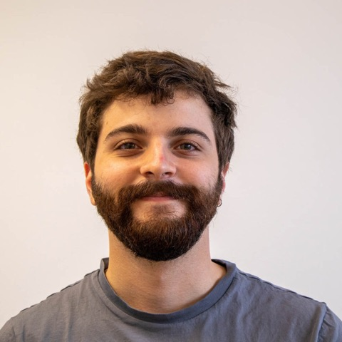

Pedro Carvalho
Physicist · PhD student at the Ernst Strüngmann Institute, Frankfurt
About
I am a physicist and a PhD student in the group of Wolf Singer at the Ernst Strüngmann Institute (ESI) for Neuroscience in Frankfurt am Main. I also work at Natural Intelligence (Nisys).
I study recurrent networks of damped harmonic oscillators (HORNs) as models of computation in neocortical circuits. My work covers how these networks use their oscillatory dynamics to learn, and how to build them in analog-electronic hardware. My background is in statistical mechanics and nonlinear dynamics.
Affiliations
- 2021 to now
- Now
-
2019 to 2021
Institute of Physics, Polish Academy of Sciences (IF-PAN)
Publications
-
2025
P. Carvalho, B. Ulmann, W. Singer, F. Effenberger
-
2025
F. Effenberger, P. Carvalho, I. Dubinin, W. Singer
Education
-
2021 to now
PhD student, Ernst Strüngmann Institute (ESI) for Neuroscience
-
2018
MSc in Physics, Federal University of Pernambuco (UFPE)
-
2016
BSc in Physics, Federal University of Pernambuco (UFPE)